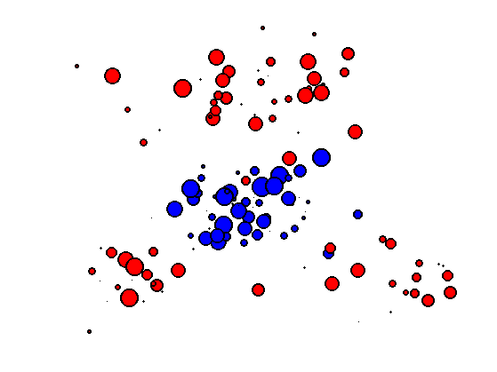

Optimal Transport with Linear Programming
This numerical tours details how to solve the discrete optimal transport problem (in the case of measures that are sums of Diracs) using linear programming.
Contents
Installing toolboxes and setting up the path.
You need to download the following files: signal toolbox and general toolbox.
You need to unzip these toolboxes in your working directory, so that you have toolbox_signal and toolbox_general in your directory.
For Scilab user: you must replace the Matlab comment '%' by its Scilab counterpart '//'.
Recommandation: You should create a text file named for instance numericaltour.sce (in Scilab) or numericaltour.m (in Matlab) to write all the Scilab/Matlab command you want to execute. Then, simply run exec('numericaltour.sce'); (in Scilab) or numericaltour; (in Matlab) to run the commands.
Execute this line only if you are using Matlab.
getd = @(p)path(p,path); % scilab users must *not* execute this
Then you can add the toolboxes to the path.
getd('toolbox_signal/'); getd('toolbox_general/');
Optimal Transport of Discrete Distribution
We consider two dicretes distributions \[ \forall k=0,1, \quad \mu_k = \sum_{i=1}^{n_k} p_{k,i} \de_{x_{k,i}} \] where \(n_0,n_1\) are the number of points, \(\de_x\) is the Dirac at location \(x \in \RR^d\), and \( X_k = ( x_{k,i} )_{i=1}^{n_i} \subset \RR^d\) for \(k=0,1\) are two point clouds.
We define the set of couplings between \(\mu_0,\mu_1\) as \[ \Pp = \enscond{ (\ga_{i,j})_{i,j} \in (\RR^+)^{n_0 \times n_1} }{ \forall i, \sum_j \ga_{i,j} = p_{0,i}, \: \forall j, \sum_i \ga_{i,j} = p_{1,j} } \]
The Kantorovitch formulation of the optimal transport reads \[ \ga^\star \in \uargmin{\ga \in \Pp} \sum_{i,j} \ga_{i,j} C_{i,j} \] where \(C_{i,j} \geq 0\) is the cost of moving some mass from \(x_{0,i}\) to \(x_{1,j}\).
The optimal coupling \(\ga^\star\) can be shown to be a sparse matrix with less than \(n_0+n_1-1\) non zero entries. An entry \(\ga_{i,j}^\star \neq 0\) should be understood as a link between \(x_{0,i}\) and \(x_{1,j}\) where an amount of mass equal to \(\ga_{i,j}^\star\) is transfered.
In the following, we concentrate on the \(L^2\) Wasserstein distance. \[ C_{i,j}=\norm{x_{0,i}-x_{1,j}}^2. \]
The \(L^2\) Wasserstein distance is then defined as \[ W_2(\mu_0,\mu_1)^2 = \sum_{i,j} \ga_{i,j}^\star C_{i,j}. \]
The coupling constraint \[ \forall i, \sum_j \ga_{i,j} = p_{0,i}, \: \forall j, \sum_i \ga_{i,j} = p_{1,j} \] can be expressed in matrix form as \[ \Sigma(n_0,n_1) \ga = [p_0;p_1] \] where \( \Sigma(n_0,n_1) \in \RR^{ (n_0+n_1) \times (n_0 n_1) } \).
flat = @(x)x(:); Cols = @(n0,n1)sparse( flat(repmat(1:n1, [n0 1])), ... flat(reshape(1:n0*n1,n0,n1) ), ... ones(n0*n1,1) ); Rows = @(n0,n1)sparse( flat(repmat(1:n0, [n1 1])), ... flat(reshape(1:n0*n1,n0,n1)' ), ... ones(n0*n1,1) ); Sigma = @(n0,n1)[Rows(n0,n1);Cols(n0,n1)];
We use a simplex algorithm to compute the optimal transport coupling \(\ga^\star\).
maxit = 1e4; tol = 1e-9; otransp = @(C,p0,p1)reshape( perform_linprog( ... Sigma(length(p0),length(p1)), ... [p0(:);p1(:)], C(:), 0, maxit, tol), [length(p0) length(p1)] );
Dimensions \(n_0, n_1\) of the clouds.
n0 = 60; n1 = 80;
Compute a first point cloud \(X_0\) that is Gaussian. and a second point cloud \(X_1\) that is Gaussian mixture.
gauss = @(q,a,c)a*randn(2,q)+repmat(c(:), [1 q]); X0 = randn(2,n0)*.3; X1 = [gauss(n1/2,.5, [0 1.6]) gauss(n1/4,.3, [-1 -1]) gauss(n1/4,.3, [1 -1])];
Density weights \(p_0, p_1\).
normalize = @(a)a/sum(a(:)); p0 = normalize(rand(n0,1)); p1 = normalize(rand(n1,1));
Shortcut for display.
myplot = @(x,y,ms,col)plot(x,y, 'o', 'MarkerSize', ms, 'MarkerEdgeColor', 'k', 'MarkerFaceColor', col, 'LineWidth', 2);
Display the point clouds. The size of each dot is proportional to its probability density weight.
clf; hold on; for i=1:length(p0) myplot(X0(1,i), X0(2,i), p0(i)*length(p0)*10, 'b'); end for i=1:length(p1) myplot(X1(1,i), X1(2,i), p1(i)*length(p1)*10, 'r'); end axis([min(X1(1,:)) max(X1(1,:)) min(X1(2,:)) max(X1(2,:))]); axis off;
Compute the weight matrix \( (C_{i,j})_{i,j}. \)
C = repmat( sum(X0.^2)', [1 n1] ) + ...
repmat( sum(X1.^2), [n0 1] ) - 2*X0'*X1;
Compute the optimal transport plan.
gamma = otransp(C,p0,p1);
Check that the number of non-zero entries in \(\ga^\star\) is \(n_0+n_1-1\).
fprintf('Number of non-zero: %d (n0+n1-1=%d)\n', full(sum(gamma(:)~=0)), n0+n1-1);
Check that the solution satifies the constraints \(\ga \in \Cc\).
fprintf('Constraints deviation (should be 0): %.2e, %.2e.\n', norm(sum(gamma,2)-p0(:)), norm(sum(gamma,1)'-p1(:)));
Displacement Interpolation
For any \(t \in [0,1]\), one can define a distribution \(\mu_t\) such that \(t \mapsto \mu_t\) defines a geodesic for the Wasserstein metric.
Since the \(W_2\) distance is a geodesic distance, this geodesic path solves the following variational problem \[ \mu_t = \uargmin{\mu} (1-t)W_2(\mu_0,\mu)^2 + t W_2(\mu_1,\mu)^2. \] This can be understood as a generalization of the usual Euclidean barycenter to barycenter of distribution. Indeed, in the case that \(\mu_k = \de_{x_k}\), one has \(\mu_t=\de_{x_t}\) where \( x_t = (1-t)x_0+t x_1 \).
Once the optimal coupling \(\ga^\star\) has been computed, the interpolated distribution is obtained as \[ \mu_t = \sum_{i,j} \ga^\star_{i,j} \de_{(1-t)x_{0,i} + t x_{1,j}}. \]
Find the \(i,j\) with non-zero \(\ga_{i,j}^\star\).
[I,J,gammaij] = find(gamma);
Display the evolution of \(\mu_t\) for a varying value of \(t \in [0,1]\).
clf; tlist = linspace(0,1,6); for i=1:length(tlist) t=tlist(i); Xt = (1-t)*X0(:,I) + t*X1(:,J); subplot(2,3,i); hold on; for i=1:length(gammaij) myplot(Xt(1,i), Xt(2,i), gammaij(i)*length(gammaij)*6, [t 0 1-t]); end title(['t=' num2str(t,2)]); axis([min(X1(1,:)) max(X1(1,:)) min(X1(2,:)) max(X1(2,:))]); axis off; end
Optimal Assignement
In the case where the weights \(p_{0,i}=1/n, p_{1,i}=1/n\) (where \(n_0=n_1=n\)) are constants, one can show that the optimal transport coupling is actually a permutation matrix. This properties comes from the fact that the extremal point of the polytope \(\Cc\) are permutation matrices.
Undefined function or variable 'exo1'. Error in index (line 206)
This means that there exists an optimal permutation \( \si^\star \in \Sigma_n \) such that \[ \ga^\star_{i,j} = \choice{ 1 \qifq j=\si^\star(i), \\ 0 \quad\text{otherwise}. } \] where \(\Si_n\) is the set of permutation (bijections) of \(\{1,\ldots,n\}\).
This permutation thus solves the so-called optimal assignement problem \[ \si^\star \in \uargmin{\si \in \Sigma_n} \sum_{i} C_{i,\si(j)}. \]
Same number of points.
n0 = 40; n1 = n0;
Compute points clouds.
X0 = randn(2,n0)*.3; X1 = [gauss(n1/2,.5, [0 1.6]) gauss(n1/4,.3, [-1 -1]) gauss(n1/4,.3, [1 -1])];
Constant distributions.
p0 = ones(n0,1)/n0; p1 = ones(n1,1)/n1;
Compute the weight matrix \( (C_{i,j})_{i,j}. \)
C = repmat( sum(X0.^2)', [1 n1] ) + ...
repmat( sum(X1.^2), [n0 1] ) - 2*X0'*X1;
Display the coulds.
clf; hold on; myplot(X0(1,:), X0(2,:), 10, 'b'); myplot(X1(1,:), X1(2,:), 10, 'r'); axis equal; axis off;
Solve the optimal transport.
gamma = otransp(C,p0,p1);
Show that \(\ga\) is a binary permutation matrix.
clf; imageplot(gamma);
Display the optimal assignement.
clf; hold on; [I,J,~] = find(gamma); for k=1:length(I) h = plot( [X0(1,I(k)) X1(1,J(k))], [X0(2,I(k)) X1(2,J(k))], 'k' ); set(h, 'LineWidth', 2); end myplot(X0(1,:), X0(2,:), 10, 'b'); myplot(X1(1,:), X1(2,:), 10, 'r'); axis equal; axis off;